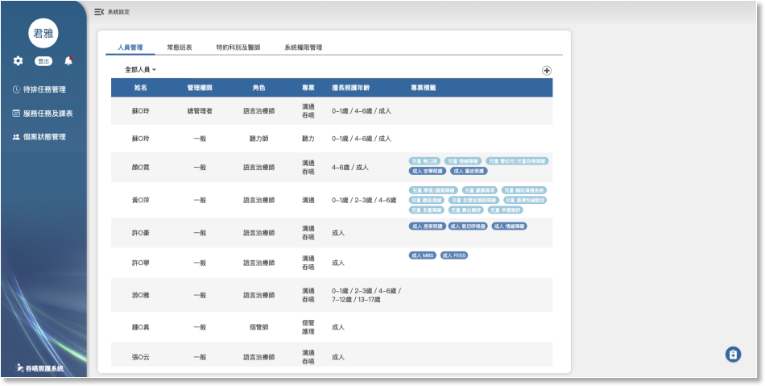
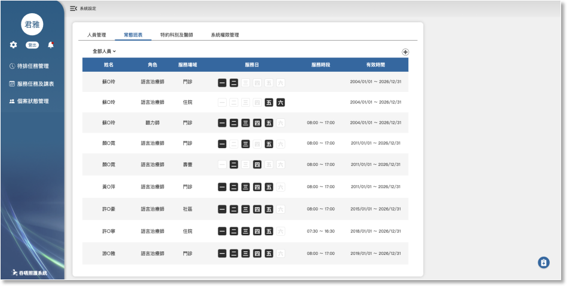
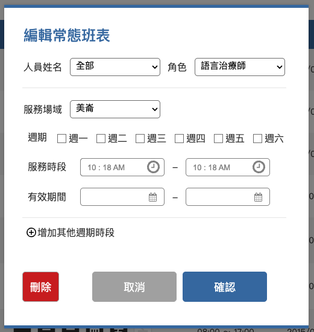
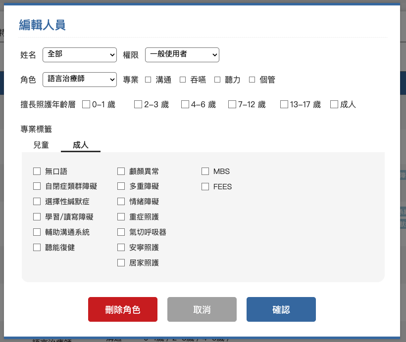
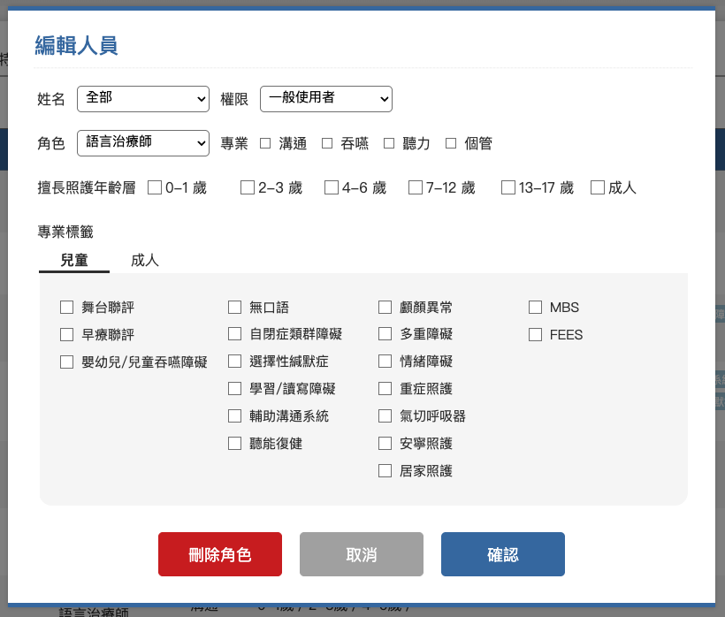
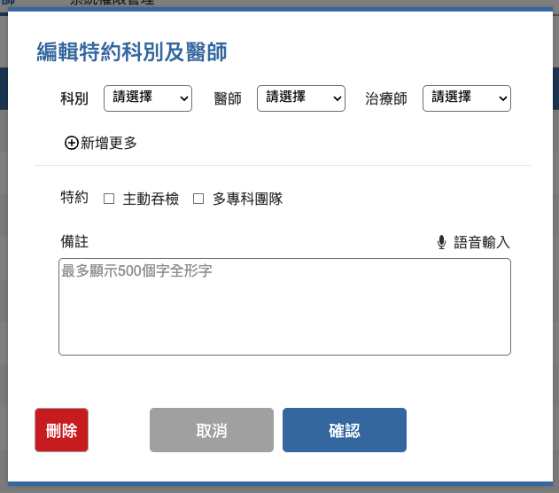

05-1 人員管理


功能

內容

說明

人員管理功能及相關連動規則


1. 此功能只提供給總管理者、門診管理者及住院管理者瀏覽及編輯。
2. 將病患的年齡及病況標籤對應治療師擅長對象及專業標籤進行派案媒合。
3. 可新增人員及相關資料，點擊已存在的項目則是可修改或刪除已存在的資料。

人員篩選

人員姓名

全部聽語治療組成員，含組長、副組長、語言治療師、聽力治療師及個管師。(310聽語治療組成員)
清單內容
1. 姓名
2. 管理權限
3. 角色
4. 專業
5. 擅長照護年齡
6. 專業標籤
1. 姓名：人資系統310聽語治療組成員，若人員離職，系統不自動刪除資料，但要在姓名下方紅字註記離職或留停等狀態。
2. 管理權限：不同的權限設定能使用系統的功能不同，詳細對應功能請參照"系統權限管理”及"特約科別及醫師”的設定。
- 總管理者：最大權限管理者，可使用全部系統功能(含可切換瀏覽每位治療師的每日任務)，除了系統管權限管理的編輯功能。
- 門診管理者：可操作門診待排管理相關聯繫及派案功能(含可切換瀏覽每位治療師的每日任務)。
- 住院管理者：可操作住院待排管理相關聯繫及派案功能(含可切換瀏覽每位治療師的每日任務)。
- 一般使用者：不可使用待排任務管理相關操作及系統管理等功能，也不可以瀏覽每位治療師的每日任務。
- 主動吞檢主責：可瀏覽主動吞檢功能，詳細說明請參照"特約科別及醫師”的設定。
- 系統管理者：只開放給資訊單位人員申請。
3. 角色三種：
- 語言治療師
- 聽力治療師
- 個管師
4. 專業對應前項角色預設勾選項目，可手動變更、可複選
- 語言治療師：溝通
- 聽力治療師：聽力
- 個管師：個管
5. 擅長照護年齡六種範圍，以全形／分隔複選項目
- 0-1歲
- 2-3歲
- 4-6歲
- 7-12歲
- 13-17歲
- 成人
6. 分類標籤：分為兒童及成人兩大類，以膠囊狀色塊包覆項目文字且有不同底色呈現。
- 兒童共十八項，專業項目前方加上”兒童及一個字元“，膠囊底色為 background color: #A5CFE0：
- 舞台聯評
- 早療聯評
- 嬰幼兒/兒童吞嚥障礙
- 無口語
- 自閉症類群障礙
- 選擇性緘默症
- 學習/讀寫障礙
- 輔助溝通系統
- 聽能復健
- 顱顏異常
- 多重障礙
- 情緒障礙
- 重症照護
- 氣切呼吸器
- 安寧照護
- 居家照護
- MBS
- FEES
- 成人共十五項，，專業項目前方加上”成人及一個字元“，膠囊底色為 background color: #5F8DBE：
- 無口語
- 自閉症類群障礙
- 選擇性緘默症
- 學習/讀寫障礙
- 輔助溝通系統
- 聽能復健
- 顱顏異常
- 多重障礙
- 情緒障礙
- 重症照護
- 氣切呼吸器
- 安寧照護
- 居家照護
- MBS
- FEES
編輯人員
1. 姓名
2. 權限
3. 角色
4. 專業
5. 擅長照護年齡
6. 專業標籤
新增：
1. 姓名：讀取人資系統中310聽語治療組成員。
2. 權限：
- 總管理者
- 門診管理者
- 住院管理者
- 一般使用者
- 主動吞檢主責
- 系統管理者
3. 角色：
- 語言治療師
- 聽力治療師
- 個管師
4. 專業對應前項角色預設勾選項目，可手動變更、可複選：
- 語言治療師：溝通
- 聽力治療師：聽力
- 個管師：個管
5. 擅長照護年齡，可複選：
- 0-1歲
- 2-3歲
- 4-6歲
- 7-12歲
- 13-17歲
- 成人
6. 專業標籤分為兒童及成人兩個頁籤，同一位治療師可同時擁有兩大類的各項專業：
- 兒童：
- 舞台聯評
- 早療聯評
- 嬰幼兒/兒童吞嚥障礙
- 無口語
- 自閉症類群障礙
- 選擇性緘默症
- 學習/讀寫障礙
- 輔助溝通系統
- 聽能復健
- 顱顏異常
- 多重障礙
- 情緒障礙
- 重症照護
- 氣切呼吸器
- 安寧照護
- 居家照護
- MBS
- FEES
- 成人：
- 無口語
- 自閉症類群障礙
- 選擇性緘默症
- 學習/讀寫障礙
- 輔助溝通系統
- 聽能復健
- 顱顏異常
- 多重障礙
- 情緒障礙
- 重症照護
- 氣切呼吸器
- 安寧照護
- 居家照護
- MBS
- FEES
編輯：
將自動帶出已存在資料的相關欄位。




05-2 常態班表


功能
內容
說明
常態班表功能及相關連動規則
1. 此功能只提供給總管理者、門診管理者及住院管理者瀏覽及編輯。
2. 設定後依各項條件在”課表看版”中呈現對應的治療師服務狀態。
3. 可新增人員常態班表，或點擊已存在的項目進行該筆資料的修改或刪除。
人員篩選
人員姓名
全部聽語治療組成員，含組長、副組長、語言治療師、聽力治療師及個管師。(310聽語治療組成員)
清單內容
1. 姓名
2. 角色
3. 服務場域
4. 服務日
5. 服務時段
6. 有效時間
1. 人員：已存在於”人員管理”中的人員姓名，若人員留/停/離職，系統不自動刪除資料，但要在姓名下方紅字註記狀態。
2. 角色三種：連動”人員管理”中人員姓名對應到的角色選項。
3. 服務場域、服務日、服務時段及有效時間為一組設定，同一位治療師可設定多組班表。
4. 人員有效時間到期前一個月，送一則通知給所有管理者，通知內容為：
- 來源：系統通知
- 內容：”姓名” "角色” ”服務場域" 的班表即將到期，請儘快前往確認。
- 瀏覽：一個"常態班表"的按鈕，點擊後開啟常態班表頁籤且畫面移動到錨點定位。
編輯人員
1. 姓名
2. 角色
3. 服務場域
4. 服務日
5. 服務時段
6. 有效時間
新增：
1. 人員：310聽語治療組成員，且已在人員管理中有任一筆記錄者。
2. 角色：連動”人員管理”中人員姓名對應到的角色選項。
- 語言治療師
- 聽力治療師
- 個管師
3. 服務場域：與課表看版連動，在每個時段區塊前方顯示治療師該時段的服務場域。
- 美崙
- 壽豐
- 健管
- 吉安
- 社區
- 特診
4. 服務日：
- 週一
- 週二
- 週三
- 週四
- 週五
- 週六
5. 服務時段：起迄時間都以半小時為一個刻度。
6. 有效時間：起迄都可設定年月日，迄日預設為隔年的12/31。
7. 服務場域、服務日、服務時段及有效時間為一組設定，同一次操作介面中可新增多一組週期時段，若儲存的記錄中有相同的設定時只保留一則資料。
編輯：
將自動帶出已存在資料的相關欄位。


05-3 特約科別及醫師
功能
內容
說明

常態班表功能及相關連動規則


1. 此功能只提供給總管理者及住院管理者瀏覽及編輯。
2. 記錄在案的科別、醫師及治療師資料依主動吞檢每日撈取資料規則載入吞嚥系統。
3. 設定為主吞的治療師有瀏覽”主動吞檢初選”名單的權限，且預設畫面會顯示相對應的科別、醫師的病患清單。
篩選
1. 特約科別
2. 特約醫師
3. 主責治療師
各項篩選的選項只顯示列表中存在的內容，三項篩選條件有連動關係，不限制選擇的優先順序。
清單內容
1. 科別
2. 科別代碼
3. 醫師
4. 醫師代碼
5. 主動吞檢
6. 主吞治療師
7. 多專科團隊
8. 備註
1. 設定的科別自動帶出對應的代碼。
2. 設定的醫師自動帶出對應的代碼。
3. 設定該名醫師為主動吞檢或多專科團隊時，在清單上標示一個黑點。
4. 特定科別或醫師對應的主責治療師。
編輯特約科別及醫師
1. 科別
2. 醫師
3. 治療師
4. 新增多組設定
5. 特約
6. 備註
新增：
1. 科別：美崙院區所有科別。
2. 醫師：美崙院區所有醫師。
3. 治療師：”人員管理”中的所有語言治療師。
4. 科別、醫師、治療師為一組設定，可同時設定多組資料。
5. 特約：
- 主動吞檢
- 多專科團隊
6. 備註：最多輸入500個全形字，可透過語音轉文字的方式輸入。
編輯：
將自動帶出已存在資料的相關欄位。

05-4 系統權限管理

功能

內容
說明

系統權限管理功能及相關連動規則


1. 此功能提供給所有管理者瀏覽，但只有總管理者可以編輯現有功能的權限，若有新增的功能需求，開發完成後，功能自動顯示在列表中，但必須填寫權限單才能由總管理者執行權限設定或變更。
2. 本系統各項功能的使用權限都依照這個管理介面的設定，若有新增功能需求，完成後自動在列表中新增項目。

管理權限

1. 總管理者
2. 門診管理者
3. 住院管理者
4. 一般使用者
5. 主動吞檢主責
6. 系統管理者

1. 總管理者：最大權限管理者，可使用全部系統功能(含可切換瀏覽每位治療師的每日任務)，除了系統管權限管理的編輯功能。
2. 門診管理者：可操作門診待排管理相關聯繫及派案功能(含可切換瀏覽每位治療師的每日任務)。
3. 住院管理者：可操作住院待排管理相關聯繫及派案功能(含可切換瀏覽每位治療師的每日任務)。
4. 一般使用者：不可使用待排任務管理相關操作及系統管理等功能，也不可以瀏覽每位治療師的每日任務。
5. 主動吞檢主責：可瀏覽主動吞檢功能，詳細說明請參照"特約科別及醫師”的設定。
6. 系統管理者：只開放給資訊單位人員申請。

功能

1. 待排任務管理
- 門診待排名單
- 住院待排名單
- 主動吞檢初選
2. 服務任務及課表
- 任務總覽
- 每日任務
- 課表看板
3. 個案狀態管理
- 聯絡及交班記錄
- 個案狀態
4. 隨手記
5. 通知中心
6. 系統設定
- 人員管理
- 常用班表
- 特約科別及醫師
- 系統權限管理

1. 每日任務：權限分為兩種，全功能及瀏覽自己。
2. 系統權限管理：權限分為兩種，瀏覽及編輯。
3. 除上述兩項功能外，其他功能只有可使用及不可使用(連瀏覽頁面的功能都沒有，左選單的該項目也不顯示)。

編輯

切換瀏覽及編輯畫面

此功能只開放給系統管理者使用，非系統管理者看不到編輯及儲存按鈕。